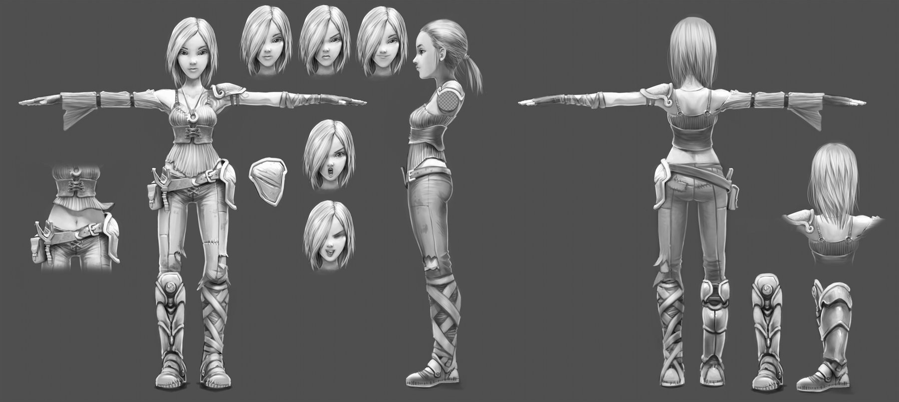
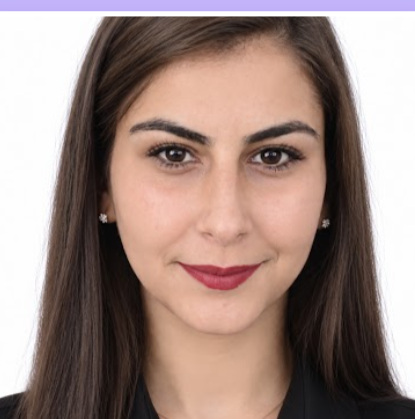
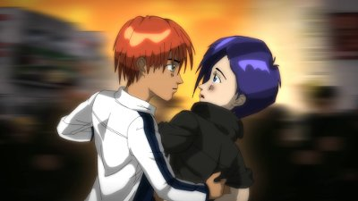

Karakter tasarımıSintel — Karakter model sayfası
Model sayfası, Sintel karakterinin farklı açılardan tutarlı görünmesine yardımcı olur; silueti, renkleri ve ayırt edici ayrıntıları gösterir.
Görsel örnekGrafik animasyon
Görseli İnceleMerhaba, ben Kevser
Akdeniz Üniversitesinde Bilgisayar Programcılığı okuyorum. Bu sitede öğrenme notlarımı, tasarım örneklerini ve ilgi alanlarımı bir araya getirdim.

FAREYİ HAREKET ETTİR · TUTUP İNCELE
3D görüntü bu tarayıcıda kullanılamıyor.
156 özgün 3D klavye tuşu. Fareyi hareket ettirerek döndür, tutup sürükleyerek her açıdan incele.
Kişisel hikayem, vizyonum ve teknolojiye olan tutkum hakkında kısa bir özet.
Frontend & UI Geliştirici
İnternet dünyasının estetik ve fonksiyonel kesişiminde yer almayı seviyorum. Web sitelerinin sadece güzel görünmesi değil; aynı zamanda hızlı, erişilebilir ve arama motorları için optimize (SEO) olması gerektiğine inanıyorum.
Eğitim programım, kullandığım teknolojiler, özel notasyonlar ve ayrıntılı özgeçmişim hakkında daha fazla bilgiye ulaşmak için profil sayfamı ziyaret edebilirsiniz.
Tüm Özgeçmişi ve Ders Programını Gör →Dersler kapsamında ve bireysel olarak geliştirdiğim grafik animasyon ve web tasarım çalışmaları.

Karakter tasarımıModel sayfası, Sintel karakterinin farklı açılardan tutarlı görünmesine yardımcı olur; silueti, renkleri ve ayırt edici ayrıntıları gösterir.

2D animasyonBu sahne karesi, karakter ile arka planın yerleşimini ve tek bir görüntüde sahne atmosferinin nasıl kurulduğunu gösterir.
 Grafik tasarım
Grafik tasarımAfişteki görsel hiyerarşi, renk seçimi ve dikey kompozisyon animasyon filminin tanıtımına örnek oluşturur.
Üç albüm, farklı hikâyeler. Fotoğraflar ve dijital çalışmalar bir arada.
 01 / 03Hayvanlarla Anılarım15 fotoğraf · Sevimli dostlarım
01 / 03Hayvanlarla Anılarım15 fotoğraf · Sevimli dostlarım 02 / 03Teknolojik Çalışmalarım11 fotoğraf · Dijital dünyam
02 / 03Teknolojik Çalışmalarım11 fotoğraf · Dijital dünyam 03 / 03Hayattan Kareler25 fotoğraf · Küçük mutluluklar
03 / 03Hayattan Kareler25 fotoğraf · Küçük mutluluklar